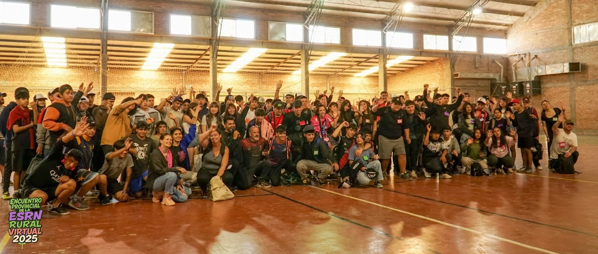
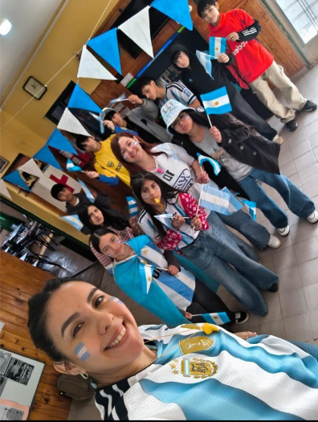

No solo un encuentro de sedes...
Más de 120 personas de todas las sedes se juntaron en Viedma y El Cóndor para convivir, compartir y demostrar que unidos somos una gran comunidad.
01 / 08
Encuentros, festejos y experiencias que cuentan la vida de nuestra ESRN Rural.

Más de 120 personas de todas las sedes se juntaron en Viedma y El Cóndor para convivir, compartir y demostrar que unidos somos una gran comunidad.

La experiencia del Mundial 2026 en la escuela.